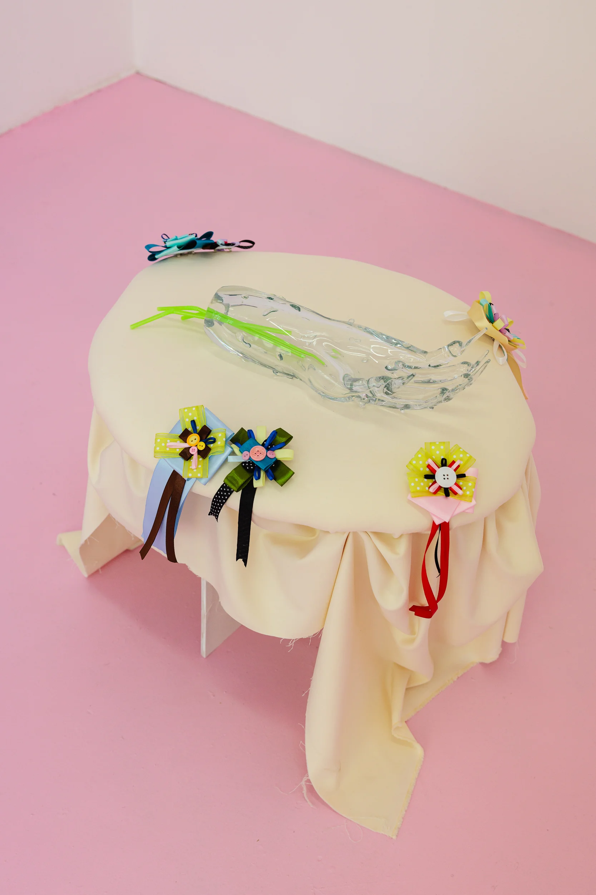
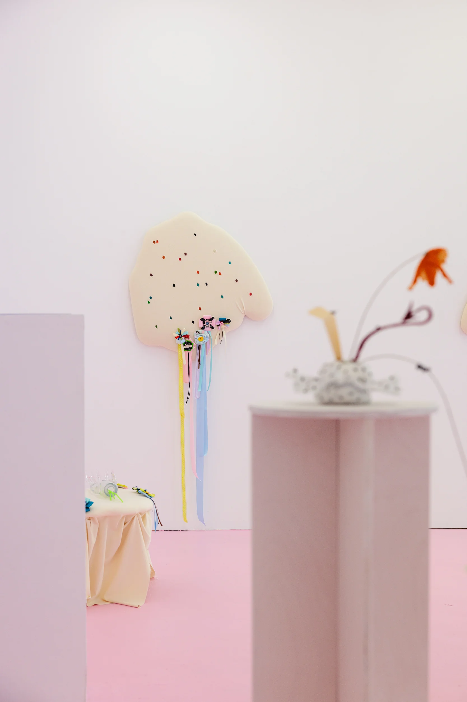
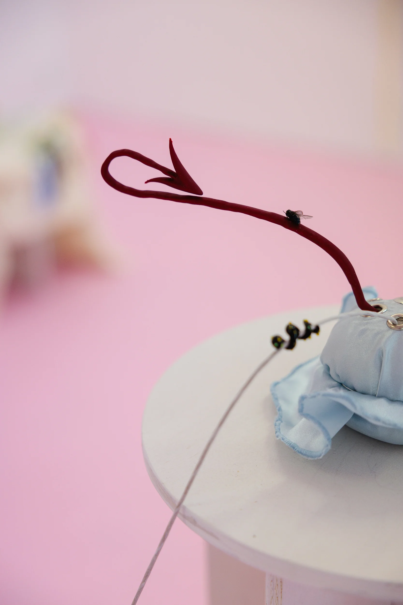
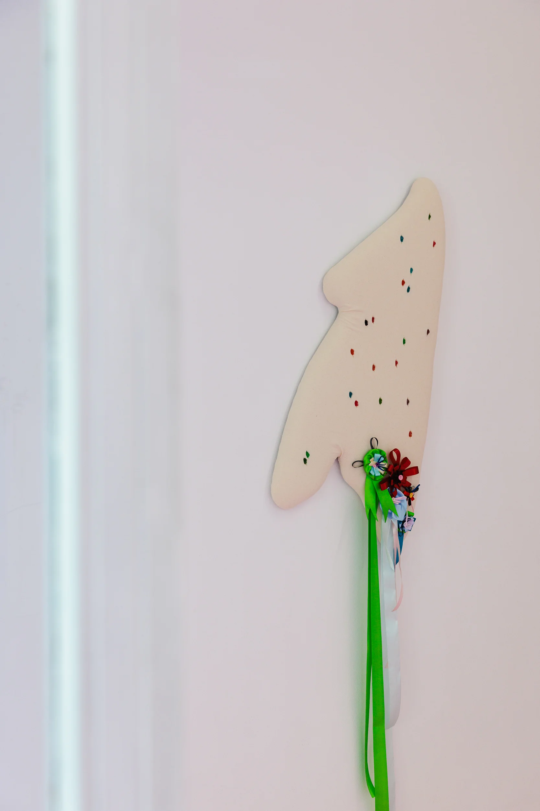
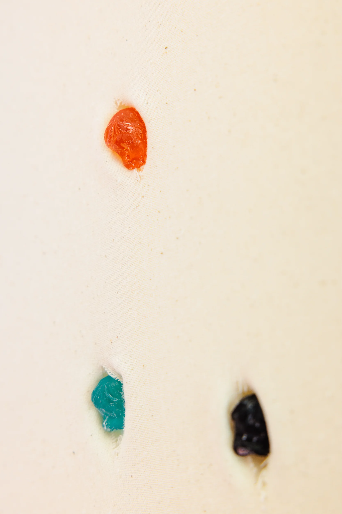
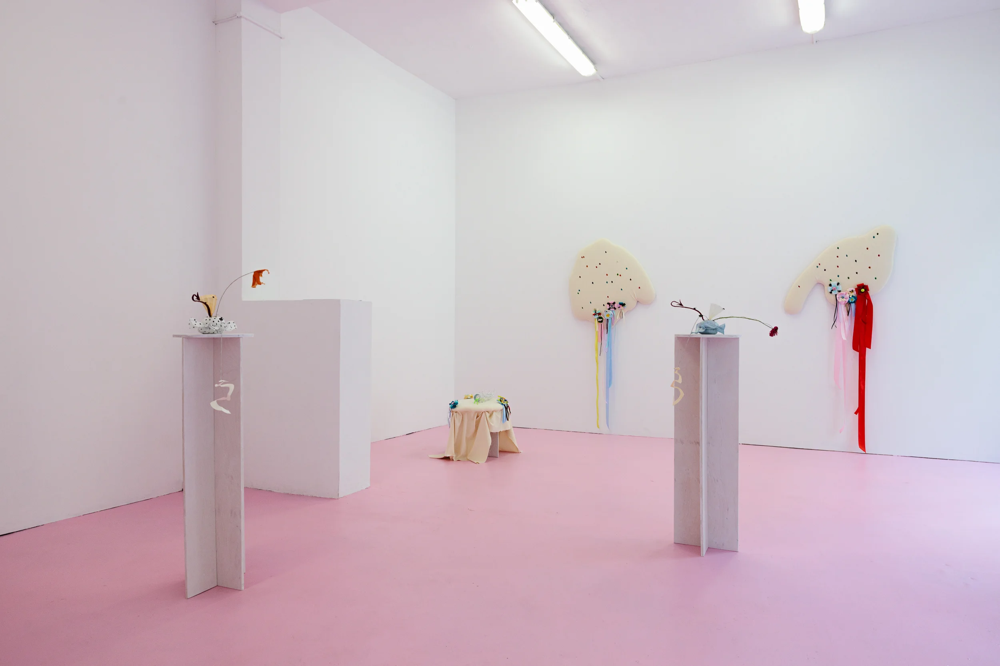
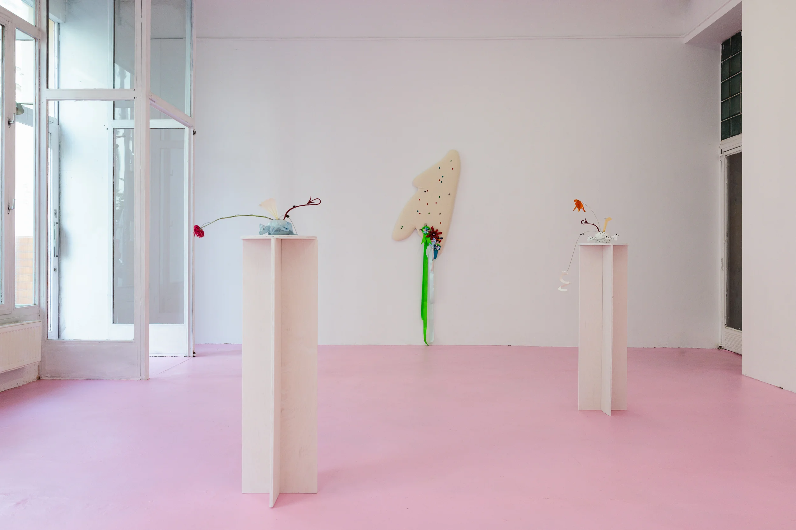
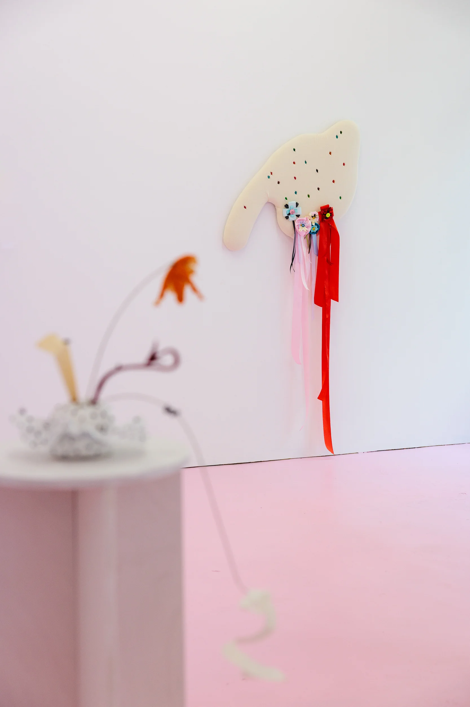

Baby Cogito: Idée Fixe, 2026
glass, found objects, textiles, epoxy resin, 3D printing, fresh flowers
The project was created as the result of a residency at the Cejla Gallery and was displayed at the solo show “Idée Fixe” (04/08/2026 – 11/08/2026)
photographer: Viola Hertelová
Mountain Dew bubbles slowly rolled up the walls of the glass, disappearing as soon as they reached the surface, while new ones formed again at the bottom. As a kid, I always wanted to believe that Mountain Dew was really as toxic-looking green as its packaging. Here, the Mountain Dew has long since dried up; all that's left of the Elixir of youth from the old monstrous hand are the straws.
The longing for youth and eternity is one of the forms of the idée fixe that has haunted us for a long time. There are plenty of allegorical examples on this topic, but is it always about a specific thought? Or rather about a promise that never gets fulfilled?
Idée fixe no longer refers to a mental disorder, as it did in the 19th century. From its psychiatric context, the term moved into Romanticism, and today, existing unchanged across different languages, it has largely shed its negative connotations. Now it is a thought or image that quietly begins to organize one's perception of the world. This fixed idea is no longer grandiose, but it manifests itself in everyday scenarios that repeat themselves tirelessly despite the awareness of their unattainability.
Within the Baby Cogito series, Idée Fixe is an intermediate stage between Episode II and Episode III. While the second episode was about pairing and the attempt at a step forward, Idée Fixe focuses on the very desire for repetition that leads to failure. In this project, the idée fixe is understood more as an obsessive expectation than as an obsessive thought. It is the conviction that the next phase or the next success will finally bring fulfillment. But this promise keeps getting pushed further away, turning into a mechanism of endless waiting.
Traces of these promises take on physical form: in a pair frozen at different stages of decay, in the aftertaste of the Elixir of youth, or in an element that migrates from project to project and has itself become the idée fixe of the whole series. They appear in childhood rewards that have lost their meaning in the adult world, in the desire for external validation, and also in the maximalism and naivety regarding fair recognition.
The postponed feeling of completion never arrives, and against the backdrop of dazzling images and dopamine-fueled hopes, disappointment slowly grows. Yet even this remains on the level of “cute”—cute, but already tired, rotten, worn out, and detached.







